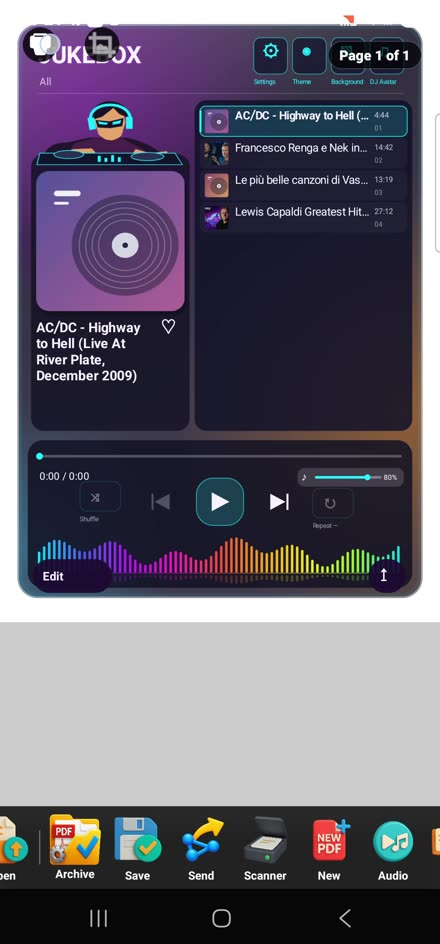

Schermate reali dell’app
Jukebox MP3
Crea una playlist, impaginala e riproducila con i controlli integrati.
Creatività per il tempo libero. Strumenti per il lavoro.
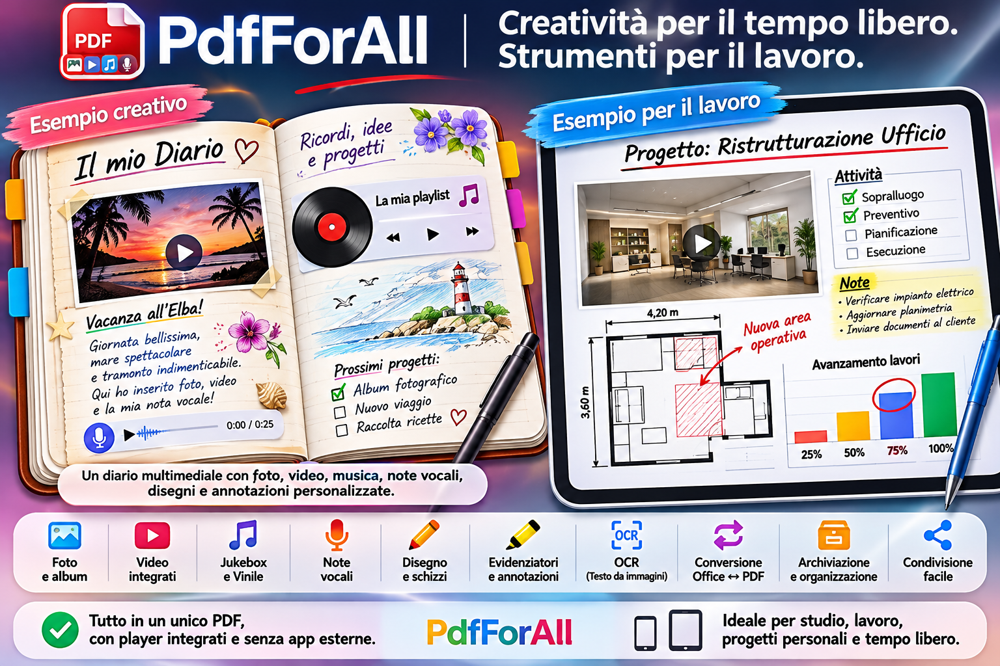
Crea diari multimediali, organizza progetti professionali e riunisci fotografie, musica, video e note in un unico ambiente basato sul PDF. Jukebox, Vinile e lettore video sono integrati in PdfForAll: nell’app non servono link esterni né player aggiuntivi.
Dai tuoi ricordi ai progetti professionali: strumenti diversi che lavorano insieme.

Crea una playlist, impaginala e riproducila con i controlli integrati.
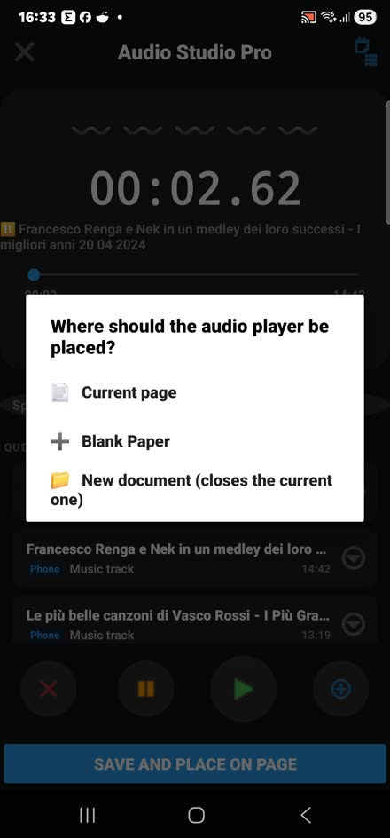
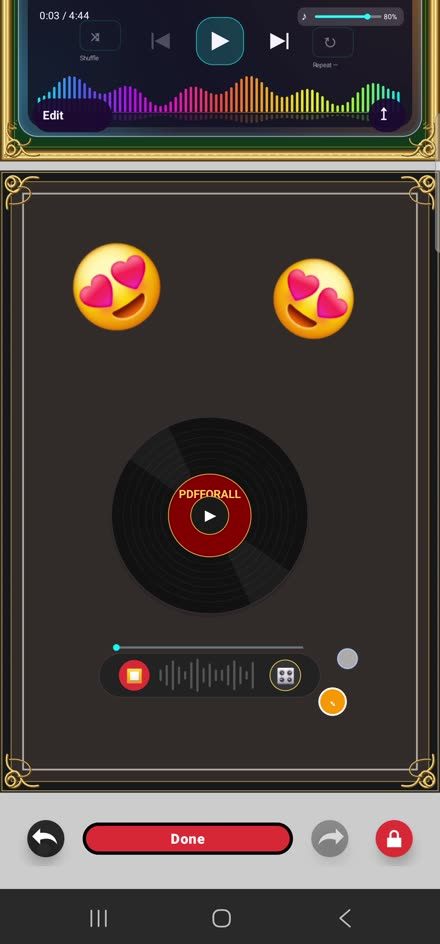
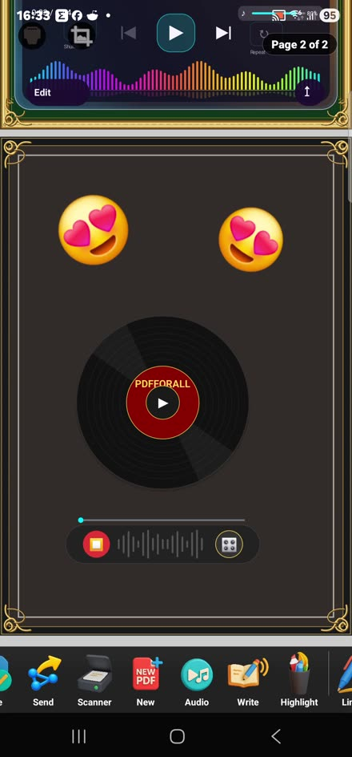
Un lettore musicale personalizzabile con emoji, cornici e riproduzione nella pagina.

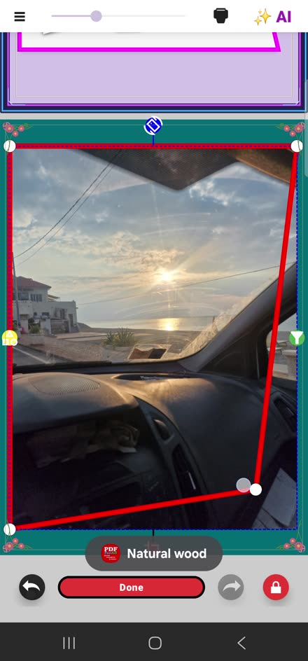

Sperimenta cornici, forme, prospettiva e composizioni fotografiche.
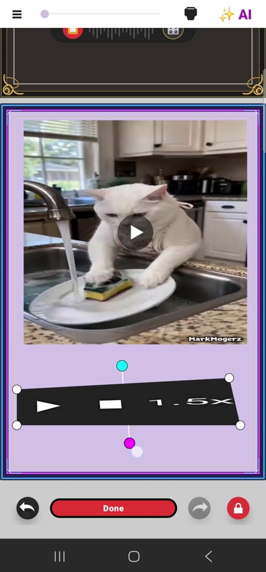
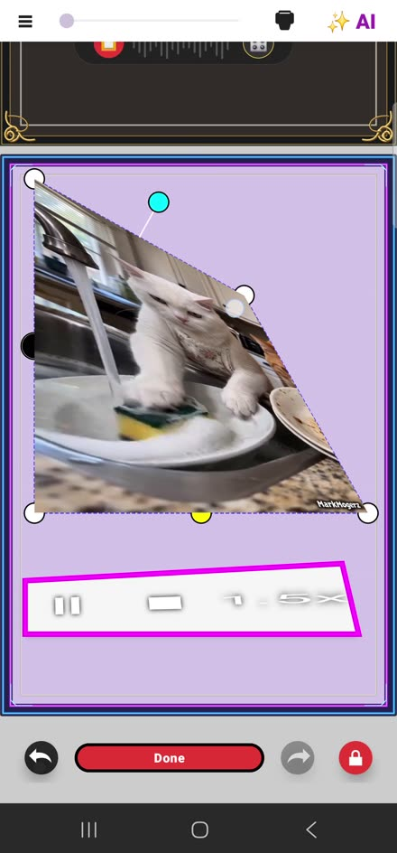
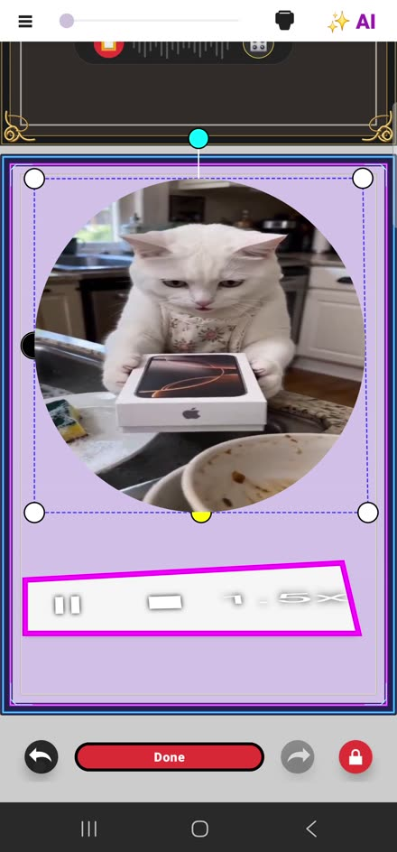
Inserisci video, modifica la forma e personalizza i controlli.
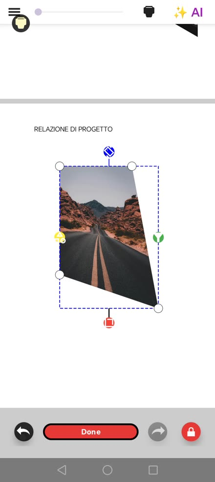


Combina fotografie, appunti scritti e annotazioni vocali.

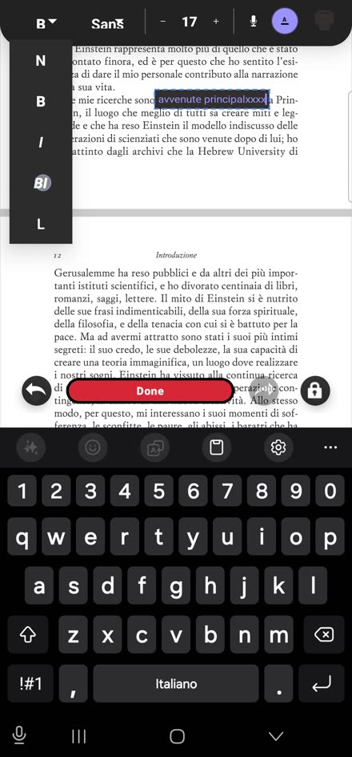

Modifica il testo, lavora sulle pagine e organizza il tuo progetto PDF.
Un unico percorso di creazione, modifica e organizzazione.
Aggiungi pagine, fotografie, testo, musica e video.
Riordina le pagine e continua a lavorare sulle bozze.
Esporta e condividi il documento o conserva il progetto modificabile.
PdfForAll include una guida iniziale e suggerimenti contestuali (Spotlight) per scoprire gli strumenti mentre li utilizzi. Non serve conoscere tutto dal primo minuto.
La guida iniziale ti presenta l’ambiente e le funzioni principali.
Tocca gli strumenti per aprirli; dove previsto, tieni premuto per richiamare l’ultima scelta.
Combina pagine, fotografie, musica, video e note; poi salva una bozza modificabile o condividi il risultato.
La guida è disponibile all’avvio; un pulsante dedicato per riaprirla sarà introdotto in una versione futura.
Un altro esempio illustrativi per immaginare ciò che puoi realizzare con PdfForAll. Le schermate e le barre degli strumenti nelle illustrazioni sono rappresentazioni promozionali, non screenshot esatti dell’app.
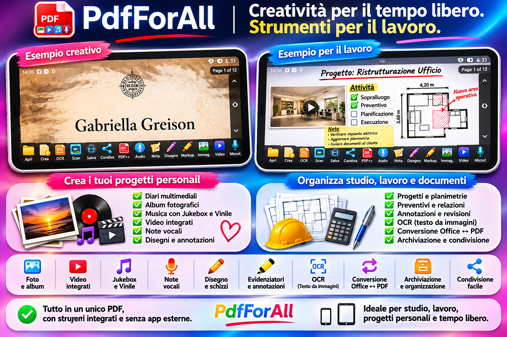
Diari personali, album multimediali, appunti, sopralluoghi e documenti professionali: PdfForAll si adatta a ciò che vuoi realizzare.
Progettato per lavorare principalmente offline. Alcune funzioni possono richiedere il download iniziale di componenti.
Scopri PdfForAll su Android. La versione Windows è in sviluppo.